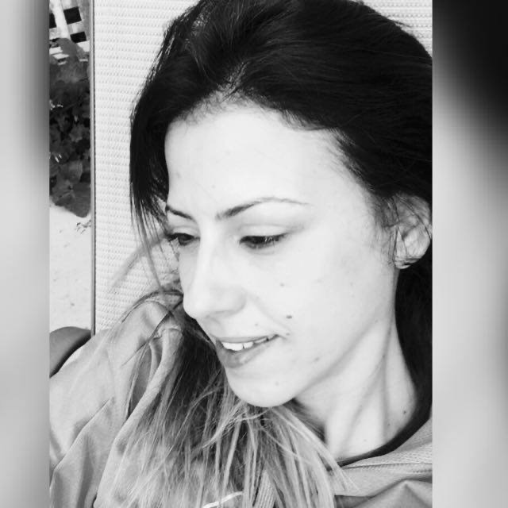

MEYTAL SHITRIT

About Me
My name is Meytal Shitrit, i'm 40 years old and currently live in Rishon Le Zion, ISRAEL.
If i have to describe myself, i would probably say i'm a coloful person.
Since i remember my self, I'v always been in learning posion-  ,
,
and thanks to that, i get to expirience many thigs....
Hobbies & Intrests
- Traveling
- Jewish studies and kabbalah
- Reading the news over morning coffee
- playing with my beautiful sibiriab husky
- surfing
Expirience
Production and Artistic Meneger
As finishing acting school, along with my acting roles,
i started working also as a producer at one of the biggest production copany called -
misgav-ori production ,
which specializes in childrens intertaiment shows,
and done already more than 150 shows , starring the greatest children artist in Israel.
My role in the company was very braod and varied, from the logistic part to the creative part.
Here you see one of my works (production and fully choreogrphy - by me)
Rhythmic Gymnastic Trainer
It all started when i came one day to visit my friend, Yulia, at work .
Introduction - Yulia and i have known each other for many years,
since we preformed together at the Israeli National Theater - "HABIMA" .
While i was turning my career into the production business,
Yulia has opened and maneged the rhytmic gymnastics club in Beer-Yaakov.
After watching the girls practice it took me only 5 min' to be convinced to come and train with her.
I did have a background in dance, but not in r.gymnastics,
so i spent the summer months sitting and studying the FIG rythmic gymnasticd rules.
The dream team of the club - MACABI BEER-YAAKOV -
YU ME
At 2019,while i was still training (and along with my other love for fasion),
Yulia and i started a new brand/lable called YU ME - fasion for rhythmic gymnastics.
The global training outfeet code is mostly black, however , no one said anything about borring or flat...
So we eccepted the challange and 5 months later we launched our first summer collection.
One of our biggest achivment was to design and produce the outfeet,
of the Israely Acrobatic Team ,for the European Championship, back in october 2019.
I think that beyond the lovely desings and the uncompromising good quality of the clothes,
what made us so special, was the fact that we produced everythig "blue and white" 
Proud to present our first collection.